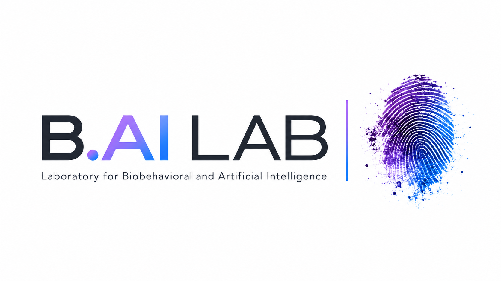

Signals synchronized.
Continuous streams aligned across devices, sensors and physiological systems.
Human signals × context × intelligent systems

A transparent research infrastructure for continuous physiological data — connecting multimodal signals with the events, interventions and environments in which they occur.
Interactive platform
One interface for multiple physiological systems. Shared time. Shared context. Machine-readable output for downstream analysis.
Continuous streams aligned across devices, sensors and physiological systems.
Medication, incision, meal, stressor or intervention linked to the physiology it occurred within.
Context-aware, machine-readable data objects generated in real time as a first layer for AI analysis.
Research vision
We treat state as a contextual fingerprint: a pattern emerging from multiple physiological streams, synchronized in time and interpreted together with what happened around them.
Capture continuous ECG, PPG, EEG, EDA, HRV, hemodynamic and related physiological streams.
Place interventions, medication, behavior, environment and events onto the same temporal layer.
Transform transparent, reproducible data objects into a foundation for physiological state modeling and AI.
Current projects
Selected work connecting physiological measurement, computational infrastructure and real-world clinical or educational environments.
Real-time acquisition, synchronization and event contextualization for continuous physiological streams and transparent downstream analysis.
Integrating ECG, PPG, EEG, EDA and hemodynamic information to investigate physiological state recognition in clinical environments.
Combining autonomic markers with educational context to understand stress, performance, simulation and learning.
Led by
Dr. rer. nat. Morris Gellisch, M.Ed., M.Sc.
B.AI Lab connects physiology, transparent data infrastructure and artificial intelligence across clinical research and medical education. The lab is built around a simple premise: meaningful inference depends on knowing not only what the body did, but when, under which conditions and in response to what.
Research record
Work spanning physiological computing, digital health, stress physiology, medical education and developmental biology.
Loading publication data…
Academic service
Editorial responsibilities, journal reviewing and international doctoral assessment across digital health, medicine, neuroscience and education.
Editorial roles
Loading editorial roles…
Peer review
Loading reviewing activity…
Collaborate
We are interested in collaborations around continuous biosignal acquisition, multimodal physiological data, transparent AI, digital health infrastructure and physiology-informed medical education research.
Add the contact email once in assets/js/site.js.